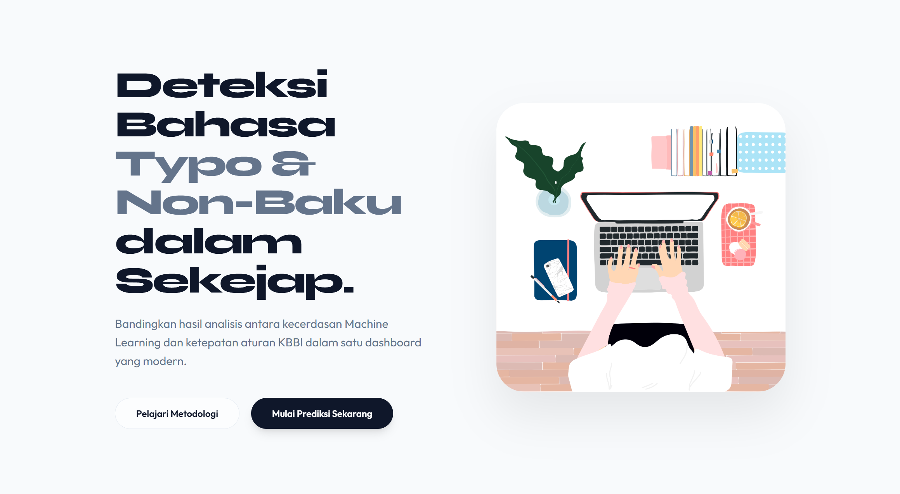

AI/ML, Team project
LinguID
A web app that classifies every Indonesian word as Formal, Non-Baku, or Typo, running a Logistic Regression model and a rule-based pipeline side by side so you can compare them on the same text.

The problem
Indonesian online is full of shortened words, slang, and typos, often in the same sentence, while most NLP tools are trained on formal text.
Three kinds of informal words
- Abbreviations, such as “yg”, “dgn”, “bgt” (the system classes these as Non-Baku)
- Slang and phonetic changes, such as “gue”, “lo”, “emang”, “kemaren”
- Typos, such as “krja” or “dnegerin”
- Each needs different handling: slang needs a formal equivalent, typos need spelling correction
One method at a time
- Dictionary-based methods are precise but cannot handle new words
- Machine learning generalises well but can be inconsistent on common words
- Few projects show both approaches side by side
The solution
- Token-level classification into Formal, Non-Baku, or Typo
- Two independent pipelines running in parallel on the same input
- One real-time dashboard that shows both results
The app
Type or paste a sentence and both pipelines analyse it at once. Below are the home and methodology pages, the two pipeline pages, the dashboard in two states, and finally the same sentence compared token by token. Click any screen to see it full size.
Home and methodology
The landing page with its two actions, and the Methodology page that introduces the two approaches before the pipeline pages.
Pipelines
A deep-dive page for each approach, opened from the Methodology page with “Pelajari Lebih Lanjut”.
Dashboard: empty state
The first screen before any text is entered: the API URL, an empty input, and both perspectives showing placeholders.
Dashboard: with a sentence
The sample sentence “Gue udah bilang ke dia kemarin tapi ga mau dnegerin karna lagi sibuk”. Typos are highlighted in red and Non-Baku words in orange.
Machine Learning vs Rule-Based
The same sentence, token by token, as each pipeline sees it.
| Token | Machine Learning | Rule-Based |
|---|---|---|
| Gue | Non-Baku → saya | Non-Baku (Phonetic Override) → saya |
| udah | Non-Baku → sudah | Non-Baku (Phonetic Override) → sudah |
| bilang | Non-Baku → mengatakan | Non-Baku (Phonetic Override) → mengatakan |
| ga | Non-Baku → enggak | Non-Baku (Phonetic Override) → enggak |
| dnegerin | Typo → negeri | Non-Baku (No Match) |
| karna | Non-Baku → karena | Non-Baku (Phonetic Override) → karena |
“dnegerin” is in no dictionary. The ML pipeline still recognises it as a typo from its character patterns, while the rule-based pipeline can only fall back to its default label. The other seven words are Formal in both. The ML label is right, but its suggestion (“negeri”) is weak: the fuzzy match picks a similar KBBI spelling, not the intended word “mendengarkan”.
Data
Five public sources serve two jobs: training data for the ML pipeline and a lookup knowledge base for the rule-based pipeline.
| Class | Sources | After data engineering |
|---|---|---|
| Formal | KBBI V (99,907 → 70,335 after deduplication) | 70,875 |
| Non-Baku | IndoCollex, Pujangga Lexicon, Kamus Alay | 27,130 |
| Typo | SALTIK + synthetic typos | 74,135 |
Preparing the data
- Deduplication, and removing KBBI entries labelled colloquial
- 54 common formal words (yang, dan, di, ke) are protected from typo generation and boosted 10×
- Non-Baku is upsampled 5× because it has far fewer entries than the other classes
Synthetic typos and the split
- 20,000 random formal words from KBBI were corrupted with four operations: swap, delete, replace, insert
- This produced 19,240 new typo examples to help the model generalise
- Stratified 80/20 split, so each class keeps the same proportion in the training and test sets
How it works: Machine Learning
A probabilistic pipeline that learns spelling patterns, so it can judge words it has never seen. These are the steps each token goes through at prediction time.
Preprocessing
Lowercase and strip non-letters. Repeated letters like “iyaaaa” are kept, because they are a useful signal.
Stopword guard
A short list of common function words (yang, dan, di, ke) goes straight to Formal (confidence 1.0), so their n-grams are not mistaken for typos.
Feature union
Character TF-IDF (2 to 5), word TF-IDF (1 to 2), and text stats, combined into 40,003 features per token.
Classify and suggest
One-vs-Rest Logistic Regression picks the label. Typos get a fuzzy match to KBBI, Non-Baku words get a formal equivalent.
How it works: Rule-Based
A deterministic pipeline that checks a token against dictionaries in priority order and stops at the first match.
Phonetic override
5,315 slang-to-formal entries. A match means Non-Baku with a formal suggestion.
Non-BakuKBBI exact match
70,335 standard words. A match means Formal.
FormalSALTIK typo
54,895 unique typo entries. A match means Typo, with its error type.
TypoElongation pattern
Reduces repeated letters, then re-checks KBBI, the phonetic list, and SALTIK.
Non-Baku / TypoNo match
Fallback label Non-Baku with confidence 0.0 and no suggestion.
Fallback
Results
The ML pipeline was evaluated on 34,428 held-out test words (20% stratified split).
| Class | Accuracy | Precision | Recall | F1 | Support |
|---|---|---|---|---|---|
| Formal | 90.12% | 0.84 | 0.90 | 0.87 | 14,175 |
| Non-Baku | 99.69% | 0.94 | 1.00 | 0.97 | 5,426 |
| Typo | 82.59% | 0.91 | 0.83 | 0.86 | 14,827 |
| Overall | 88.38% | 0.90 | 0.91 | 0.90 | 34,428 |
Precision, recall, and F1 in the Overall row are macro averages. Non-Baku scores highest, but this is likely inflated: upsampling was applied before the train-test split, so duplicate words appear in both sets. Formal benefits from the wide KBBI vocabulary. Typo is the hardest class because real typos vary so much that even synthetic generation cannot cover them all. Only the ML pipeline has accuracy figures; the rule-based pipeline is compared qualitatively.
Machine Learning
- Strength: generalises to new words through character n-grams
- Gives a confidence score for every word
- Limit: sometimes inconsistent on very short words
Rule-Based
- Strength: fully consistent and easy to trace layer by layer for words in the dictionary
- Confidence is 1.0 on any match
- Limit: cannot classify words outside the dictionaries
Deployment
A FastAPI backend loads the saved model once at startup and serves a plain HTML, CSS, and JavaScript dashboard, deployed on Vercel.
Input
The user types a sentence, which is split into word tokens.
FastAPI
/predict analyses one sentence, /predict/batch up to 100 at a time.
Two pipelines
The saved ML model and the rule-based lookup run independently on each token.
Dashboard
Both results appear side by side with highlights, confidence, and suggestions.
Limits and next steps
Limitations
- Words are classified one by one, without the context of the whole sentence
- Synthetic typos use only four patterns, so more complex mistakes are not fully covered
- The strong Non-Baku score comes largely from upsampling applied before the split (duplicates appear in both train and test), so it overstates real performance and borderline words may lean towards Non-Baku
- Phonetic override runs before the KBBI check, so a few standard words (such as “jawab” or “minta”) are labelled Non-Baku by the rule-based pipeline
- No support for code-switching, such as Indonesian mixed with English
Next steps
- IndoBERT to understand context and improve typo detection
- A larger, regularly updated slang and typo dataset
- An ensemble that combines both pipelines into one prediction
- Code-switching detection
My contribution
A team project for the Natural Language Processing course at BINUS University, built by five people (Group 7). I worked as an ML engineer and frontend UI developer, and like the rest of the team I also helped collect the datasets and write the report.
Machine learning
- Collecting and preparing the five data sources: KBBI, SALTIK, IndoCollex, Pujangga, and Kamus Alay
- Building the ML pipeline with TF-IDF features and a Logistic Regression classifier
- Evaluating the model on the test set and comparing it with the rule-based pipeline qualitatively
Web app and report
- Designing the dashboard interface: highlights, summary cards, and token tables
- Building the pages with HTML, CSS, and JavaScript
- Writing the project report together with the team